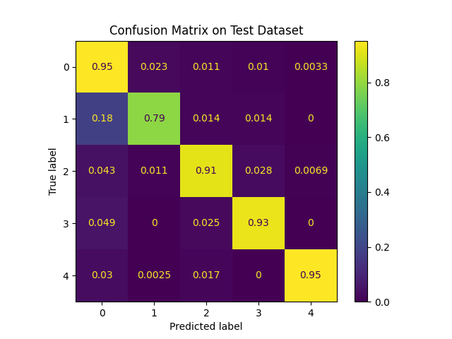

Task III: Testing the Holdout Set¶
Code: https://github.com/A-Telfer/telfer-ecg-heartbeat-categorization-task/blob/master/notebooks/4.0-telfer-explore-results.ipynb
The results on the holdout dataset (Figure 7) were poorer than the test dataset (Figure 6). The AUC also declined from the training (0.999) -> validation (0.991) -> -> test (0.986) -> holdout (0.983).
These results make sense because each time we train or select a model based on a dataset we are effectively fitting to it. Therefore the performance of models on these datasets is expected to be slightly higher than on new datasets (such as the holdout on which no decision have been made).
Training Dataset: The model is fit to the dataset directly due to training on it
Validation Dataset: Less directly the model is fit to this dataset because it is used for early stopping and model selection. The model is frozen at the point where it performed best on the validation set.
Testing Dataset: This dataset is used to select hyperparameters, thus hyperparameters that lead to poor performance on the test set are discarded.
Holdout: The holdout is purely used for evaluation. No decisions are currently being made on it, leaving it as the best indicator of model performance in the real world.

Figure 6: Confusion Matrix results on the test dataset normalized over the True label. F1=0.9864, Accuracy(macro average)=0.9062, Accuracy(micro average)=0.9450

Figure 7 (Duplicate of Figure 5): Confusion Matrix results on the holdout dataset normalized over the True label. F1=0.9833, Accuracy(macro average)=0.8961, Accuracy(micro average)=0.9445